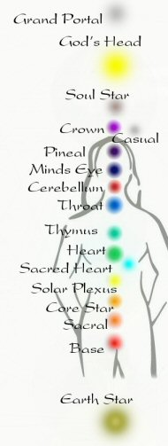

The Sanskrit name for
this chakra is Muladhara which means root. The Hindus depict this center
as a lotus of four petals within which is a square. This can be seen as
representing the four directions, and the firm foundation of the
material world, which is symbolized by a square. In the centre is the
symbol for the seed sound, believed to contain the essence of the chakra
which is lam. These images and sounds are all symbols that can be used
to access the chakra when we need to. In the body, the first chakra is
located at the perineum, midway between the anus and the genitals.
Chakras have been described as vortices of energy. At the level of the
first chakra, our vortex is the most dense. To ignore this chakra or its
elements is to threaten our very survival, either in our personal lives,
or as a planet. If we do not balance this chakra before we progress to
others, our growth will be without roots, ungrounded and will lack the
stability necessary for longevity.
Chakra 2
The second chakra is
located in the lower abdomen centered between the navel and the
genitals. The element of this chakra is water, and classically, this
chakra is the centre of sexuality as well as emotions, sensation,
pleasure, movement and nurturance. In Sanskrit, the chakra is called
Svadhisthana, from the root "svad", to sweeten. The Hindu symbol for
Svadhisthana has six petals, generally of a red (vermillion) colour. It
contains a crescent moon, and a lotus within a lotus. The seed sound in
the lotus is "vam".
The second chakra is related to the moon. Like the moon's pull on the tides, our desires and passions can move great oceans of energy. The moon rules the mysterious, the unseen, the dark, and the feminine. This gives the centre a very subtle power of its own as we move from our depths outward to create change in the world. At the level of the second chakra, desire and duality play a distinct role-that of getting us motivated for movement and change. Through our desires we expand. Desire is the expression of the physical and spiritual needs of the being. It is like the movement of water. It is the nature of water to move with gravity. If water is held back in its path, a pressure will build up. This pressure will gradually erode whatever is holding it back. It is the nature of the water to flow in a particular direction, and the water has no preference as to what form it follows to get there. All rivers lead eventually to the sea. All rivers find the path of least resistance. Thwarted desires are often saying that we are not traveling the path of least reisitance. If our consciousness is inward instead of outward, we will find another way.
Clairsentience is the psychic sense of the second chakra, the first "stirrings" of higher consciousness and the development of greater sensitivity toward others. It is the ability to sense other people's emotions, also called empathy. It is experienced as a subltle feeling, but as if we were experiencing the feeling ourselves. Most people are clairsentient to some degree. the phenomenon usually occurs more strongly in people who have a proclivity for clairvoyance or telepathy characteristic of the upper chakras. Clairsentience is a valuable source of information in healing and helpful in the development of psychism. With conscious attention, it is an aid rather than a detriment.
Chakra 3
From earth to water to
fire. The first chakra was one of solidity, stability, focus and form.
Through the undimensional eyes of the first chakra we experienced unity.
Within this unity we then found difference, change and movement. Through
the second chakra we saw dark and light, the passions of duality and
choice, emotion and desire. We expanded our instincts from our own
survival to the desire for pleasure, nurturance and the need to reach
out and expand. When these two levels are put together, we find that
they create a third and unique state of existence: energy - the field
made by the dance of matter and movement. In physical terms we call it
combustion; in the body it is metabolism; psychologically, it relates to
personal power and will; and in our outer lives, it is the realm of
action.
This is the third chakra. Its element is Fire and its purpose is transformation. The third chakra transforms the inertia of earth and water into action, energy and power. The first two chakras flow downward, subject to gravity and to forms already in existence. Fire flows upsward, destroying form and taking the raw energy to a new dimension.
At chakra three we reach deep into our sense of self, established at the base level, and find a point of dynamic balance between extremes. We temper our desires - not controlling them , but shaping them, riding on their passion, directing it. We create a third point withing ourselves, newly expanded from the growth of the second chakra. We emerge from the pasivity of earth and water and take conscious, deliberate action. We release ourselves from the duality below, and ride upon the constant flux of many points as they combine together. The second chakra presents choices. Out of choices, fueled by desire, the will is born. Will is the conscious combination of mind and action, the overcoming of inertia, and the essential spark that ignites the flames of our power. The task of the third chakra is to overcome inertia. In order to develop and heal ourselves at this third chakra level, we must re-examine our concept of the power which involves control of one part over another. Instead we can replace it with a cooncept of power as integration, power from within, the power of an organism's wholeness, and its ability to connect with the power around us in all of life. When we think about power, we can think about it as an active verb rather than a noun. We think in terms of "power to" inistead of "power over".
In The Body the third chakra is located in the solar plexus, over the adrenal glands. This is where we get those "butterfly' feelings when we're nervous. The third chakra rules over the metabolic system, and is responsible for the regulation and distribution of emtabolic energy throughout the body. This is done throught the combustion of matter (food) into energy (action and heat). Malfunctions digestive system such as diabetes, hypoglycemia or stomach ulcers relate directly to this centre.
In Sanskritthe chakra is called Manipura, which means "lustrous gem" because it shines bright like the sun. Its symbol is a lotus with ten petals,within which is a downward pointing triangle, surrounded by three T-shaped "svastikas" (Hindu symbols for fire). Within the lotus is a ram, a powerful and energetic animal, usually associated with Agni, Hindu god of fire. The seed sound for this chakra is Ram.
To break the cycle of fear and withdrawal takes a reconnection with the self in a loving and accepting way. If we are not in touch with our ground, our bodies our passions and pleasures, desires and unions, we have no fuel for our fire.
Chakra 4
From the active, fiery
solar plexus, we are thrust into a new and different realm. From the
world of the body and manifestation, we break deeper into the softer
touch of spirit. From the focus on the self and its desires and actions,
we embrace a larger pattern, and dance our tiny part within the web. We
transcend our ego, and grow toward something greater, deeper, stronger.
As we embrace the Heavens,we have more than ourselves. We expand. We
have reached the central part of the chakra system. It is our core, the
inner spirit that unites all the other forces above and below, within
and without. Above, we have our abstract spirit, the mental realms, and
below we have our "worldly" chakras. The task of chakra four is to
integrate and balance the realms of the mind and body. In so doing, it
brings a radiant sense of wholeness to the entire organsim and a
realization that we are an exquisite combination of both spirit and
matter. Within this sense of wholeness lies the seed of inner peace,
which takes root and grows firm as this chakra is opened. The symbol for
the heart chakra is a circle of 12 lotus petals surrounding two
intersecting triangles, forming a six-pointed star. The triangles
represent the descent of spirit into the body and the ascent of matter
rising to meet spirit. In the heart, the cosmic and the earth energies
combine, forming a star that radiates from the center of the chakra. The
six points can also be seen as relating to the six other chakras, each
represented at this center. The colour for this chakra is green, and its
seed sound is Lam.
The heart chakra is the center of love. The love we experience at the level of the heart chakra is distinctly different from the more sexual and passinate love of the second chakra. At the fourth chakra, the love is no longer object dependent. The love we feel is felt toward everything we encounter, because it is felt within as a state of being. At the heart, our love is no longer one of need or desire. Instead, it is one of joyous acceptance of our place among all things, of a deep peace that comes from lack of need, and of a radiating quality that comes from harmony within the self. Love takes the emotional content of the second chakra and balances it with understanding from the seventh. The understanding tempers the desire, and allows us to see beyond our own needs.
The element of this chakra is air, the least dense of our physical elements. Air, as an element, is commonly associated with knowledge, love and things that are light and spirited. Air represents freedom, as inthe birds that fly. Air represents lightness, simplicity and softness. Air also represents breath,the vital energy of life. The Hindus call it prana, the Chinese call it chi, the Japanese call it ki.
Chakra 5
Sound...rhythm...vibration...words. Powerful rulers of our lives, we
take these things for granted. Using them, responding to them, creating
them anew each day, we are the subjects of rhythm upon rhythm, endlessly
interweaving to create the fabric of all that we experience. From the
first cries of a newborn child to the harmonies of a symphony, we can
hear the sound of consciousness reaching out to connect with others and
echo back upon itself again.
Communication is the means whereby consciousness extends itself from one place to another. Invisible, sometimes even inaudible, communication is the connecting principle that makes life possible. From the DNA encoded messages of living cells to the spoken or written word, from the nerve impulses connecting mind and body to the broadcast waves connecting continent to continent, communication is the heart of coordination among all living things.
Chakra five is the center of sound, vibration and self-expression. It is the realm of consciousness that controls, creates, transmits and receives communication, both within ourselves and between each other. It is the center of dynamic creativity, of synthesizing old ideas into something new. Its attributes include listening, speaking, writing, chanting, telepathy and any of the arts-especially those related to sound and language.
The chakra of communication, commonly called the "throat chakra" is located in the region of the neck and shoulders. Its colour is blue-a bright cerulean blue, as opposed to the indigo blue of chakra six. It is a lotus with 16 petals, which contain all the vowels of the Sanskrit language. Vowels are typically thought to represent spirit, while consonants represent the harder stuff of matter. The lotus is called Visuddha, which menans "purification". Within the chakra appears, once again, Airavata, the many tusked white elephant. He is within a circle inside a triangle pointing downward, symbolizing the manifestation of speech. The deities are the God Sadasiva and the Goddess Gauri. Each of the deities is shown with five faces.
The associated element of this chakra is ether, otherwise known as Akasha or spirit. This chakra brings an awareness of deeper harmonics hidden in the subtler vibrations of what is known as the "ethereal" realm. It is the last of the seven chakras to have an element associated with it.
Chakra 6
From the dawning of
ages, darkness and light have intertwined to bring us one of the
greatest gifts of nature's wonder-the ability to see the world around
us. Stimulated and enhanced by colours all around us, shape and form are
recorded in our mind's eye to dance across our thoughts and bring them
to life. From our dreams we manifest our inner visions. From our
intuition we"see" our way through situations, making constant decisions,
as we discern and organize the patterns we perceive around us.
The "brow chakra" is located in the center of the head behind the forehead, either at eye level or slightly above. It is associated with the third eye, an etheric organ of psychic perception floating between our two physical eyes. The third eye brings us added understanding, much as reading between the lines of a piece of paper gives us added insight into words. The seed sound of this chakra is OM, with special emphasis on the "mm" sound, which vibrates the bones in the face,stimulating this center. There are only 2 petals at the ajna chakra, which resemble wings and symbolize the ability of this chakra to transcend time and space, allowing the inner spirit to "fly" to distant times and places. Chakra six is the centre of "seeing", related to the element light. Through the sensory interpretation of light we obtain information about the world around us. How much we are able to see depends upon how open or developed this chakra is. The gamut of visual and psychic ability run from those who are extremely observant of the physical world to those who are gifted in psychic perception, who can see auras, chakras, details of the astral plane, as well as precognition (seeing events in other times) and remote viewing (seeing into other places).
At the sixth chakra we encounter a higher,faster vibration than that of sound, though of a fundamentally different character. Here we embrace the phenomenon of light, a small part of the larger electromagnetic spectrum. If we consider that a large percentage of our information comes to us in visual form, and that visual information is perceived in the form of patterns of colour, the subtle changes in frequency exhibited by light must have an enormous effect upon our minds and bodies. The chakras too have their own associated colour, which correspond largely with colours used for healing the part of the body associated with each chakra. The colours for the chakras are as follows:
Chakra One - Red
Chakra Two - Orange
Chakra Three - Yellow
Chakra Four - Green
Chakra Five - blue
Chakra Six - indigo
Chakra Seven - violet
Chakra Eight - Black
Chakra Nine - Golden
Tenth Chakra - Purple - Blue
Eleventh Chakra - White
Twelveth Chakra - Silver
Colours, like the sounds associated with each chakra,are another manifestation of the seven planes associated with this system. They are a key to understanding of self and environment,and another tool for the conscious manipulation of our own energies. They can be used in visualization for self-healing and for projecting outward what we want to manifest around us.
The most significant aspect of consciousness at the level of the sixth chakra is its profound degree of psychism, that is, the perception of information in the nonmaterial realm and the ability to make conscious use of those perceptions. The term "clairvoyance" means clear seeing. seeing that is not muddled by the opaque world of material objects normally defining our limited sense of space and time. To be clairvoyant we need to look in the spaces that are clear-to look at the fields of energy, not of objects; to look at relationships, not things; to see the world as a whole, and to reach with our minds directly and clearly for the information we want. The more clarity we have within ourselves, the better we are able to see the subtle properties of the world around us. Secondly, to be clairvoyant we need to see-and as obvious as this may sound, true "seeing' is a process that goes far beyond the one we use to keep furniture from bumping our shins. To "see" implies a far deeper perception than to look. The third eye is a kind of psychic lens through which our higher senses perceive and interpret information, which is then run through the ajna chakra itself, where it is compared and arranged with pre-existing data. Here it is the third eye that looks and the ajna that sees. If you close your eyes and remember your first car, you can see the colour, upholstery and maybe even a small dent on one side. Like the hologram, you in your mind's eye can walk around the car, seeing the front and back as you choose. The actual car need not currently exist. The image exists apartfrom it and by focusing our attention, the image is retrieved. In your mind's eye, you can see what you choose to look at. This is the process of visualization. Clairvoyance is a willed process of visualization. It is a matter of systematically being able to call up relevant information on demand, regardless of whether it had been previously programmed. We transcend at this level. We need not limit accessible information to what has been entered in the past-we can also retrieve information from the future. The only difference is that we are willing the creation of the reference beam that will bring forth the image, rather than waiting for some point in the future where circumstances will call it forth. Once we know where to look for data, we need to know how to look. Accessing memory is a process of finding the right code-the right reference beam to bring the holographic image back to life. The development of clairvoyance depends on the development of the visual screen and the creation of an ordering system with which to access information from the screen.
Chakra 7
The 7th chakra is located at the top of the head
and is violet or white in colour. this centre is known to govern our
cosmic consciousness and it is here that we begin to understand our
spiritual wisdom. The mantra for this centre is AUM and the crystals
that help open this centre are Clear quartz, Amethyst, and Chevron
Amethyst you can find more crystal linked to this centre on our gems and
crystals page.
Chakra 8
The 8th chakra is located at the base of the skull where we find the
cerebellum or shamballa as it is also known. it is through the opening
of the centre that we begin to manifest advanced spiritual skills like
bi-location, etheric projection , invisiblity, and I have found that
this centre is linked to the etheric plain. the mantra for opening
this chakra is DEE-EE-OH. Crystals that also help open this centre are
Petersite, Spirit Amethyst, auora Quartz, Clear Quartz, selenite. it is
advised that the lower seven charkas are grounded before working with
this chakra. Another way I have found to activate the opening of this
chakra is through peripheral vision also known as auric sight. One
techique that I personally use is that of sitting infront of a mirror
and focusing on the minds eye and once the etheric body is visible
moving my focus into the etheric body. this techinque I have found works
well with opening this centre. it is within the etheric body or casual
body that we find the lower point of the etheric heart the Manasic
Permenent atom or generic mind as it is also known.
Chakra 9
The 9th chakra is also known as the upper dan tien
located at Pineal Gland and appears like a golden sun just above the
minds eye. it is here the christ abilities lie dormant. crystals used
with this chakra are sagilite, selenite, and clear quartz.
Chakra 10
The 10th chakra is located just above the heart
chakra at the thymus gland or spiritual heart as it is also known. it is
here that we find our connection to god. this centre is also known as
the centre of yin and yang as it balances the energies flowing from the
earth star and the 12th chakra the gods head. Tapping this centre with
your index finger twice and repeating the words I AM, I AM will help
awaken this centre for best results it is advised that you do this at
least 21 times a day, crystals that help open this centre are Raspberry
Aura, Aqua Aura, Turquoise, and Aurora Quartz. just to name a few.
I Am is a good mantra for this chakra.
Chakra 11
The 11th Chakra is located an inch and a half
above the belly button it is here that we find our divine essence known
as the soul or soul star as it is also known, and and it is here we find
our being that exists beyond the realms of time and space, crystals used
with chakra are fire opal, coral, clear quartz merkaba, golden healers,
and clear quartz.
Chakra 12
12th Chakra: Silver The
passive intuitive "Yin" principle in creation and your innermost link
with the Creator - your Divine essence; with opening of this chakra you
become more aware of your Divine purpose, with the realisation that all
things will be achieved according to Divine Plan.

http://www.wingmakers.co.nz/Chakra_History_And_Information.html